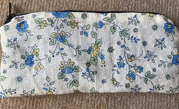
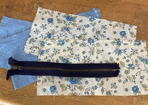
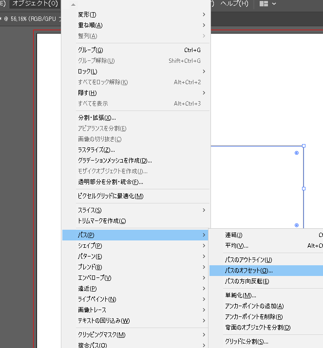
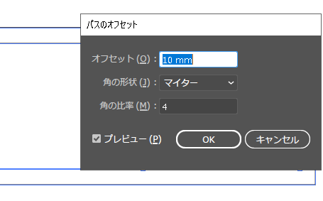
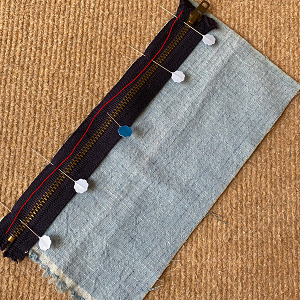
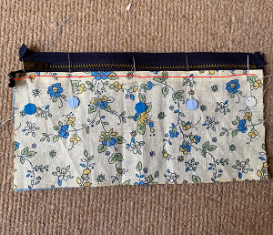
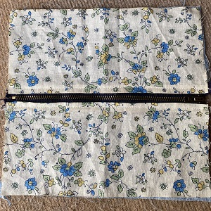
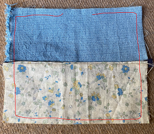
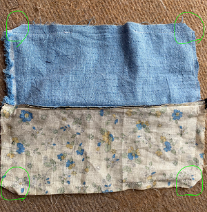

研究日誌

布を切る
ファスナーに縫い付ける
表と裏をそれぞれ縫い付ける
ひっくり返す
返し口を手縫いする

表布2枚
裏布2枚
ファスナー(横幅よりちょっと長いサイズ)
まずは形を考えます。長方形です。この作品の時は出来上がりが縦8㎝×横20㎝くらいだった気がする(昔すぎて忘れてしまったのがやばい)。一番長い文房具の長さに3㎝プラスするくらいだったと思う。丁度で作ると出し入れができません。縦の長さは欲しい長さプラス1~2㎝(中身を入れたときのふくらみを考慮しましょう)
形に納得したら、今度は縫い代を考えます。今回は1㎝でやりましょう。先ほど作った長方形の周りに1㎝の縫い代をつけます。
アナログに型紙を作る場合は、出来上がりの大きさで型紙を切って、布を切るときに、出来上がりの1㎝外側を切ってください。
イラストレーターでやる場合は、出来上がりのオブジェクトを選択して「オブジェクト」＞「パス」＞「パスのオフセット」より縫い代を簡単につけることができます。（画像参考）角の形状は時と場合に応じて選択してください。オフセットで作った線で布ｗカットしてください。


切ったらこんな感じ。
まずは裏布から。写真の赤線を引いてあるところを縫います。布の向きは外表。縫い終わったら、縫い目のところで、ファスナーと反対方向に布を折っておきます。

表の布は出来上がりのところで裏に折り返してください。写真の赤線のところを縫います。

反対も同じように縫います。ここまでできると↓のようになります。

表布は表布、裏布は裏布同士で中表に合わせます。そしたら写真の赤い線のようにコの字に縫います。裏布の真ん中が開いているのはひっくり返すためです。縫う前に、ファスナーのスライダーをファスナーの真ん中あたりに移動しておいてください。

もし、ファスナーの部分が縫いにくいときは、ミシンで縫わずに手縫いで行うと上手くいきます。
角を三角形に切り取ります。縫ったところの角から5㎜くらい外側のところを切ってください。

ひっくり返すための隙間(返し口)から全部ひっくり返します。
角はリッパーや目打ちを使って形を整えると奇麗になります。
返し口を手縫いでふさいでください。
いかがでしたか？ファスナーは難しいです。なかなか慣れない。サイズを変えてポーチとして使ってもいいと思います。